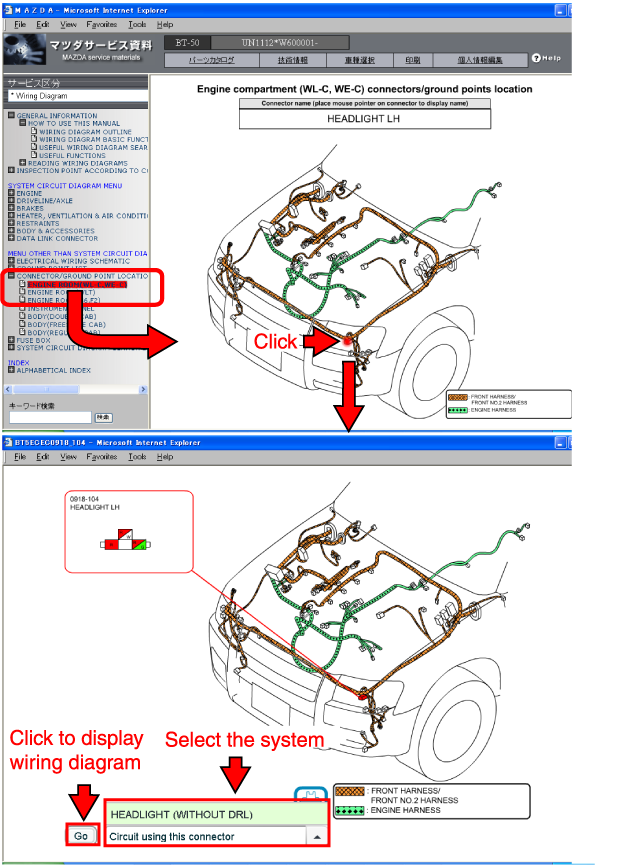
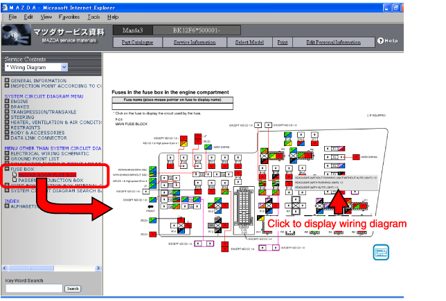
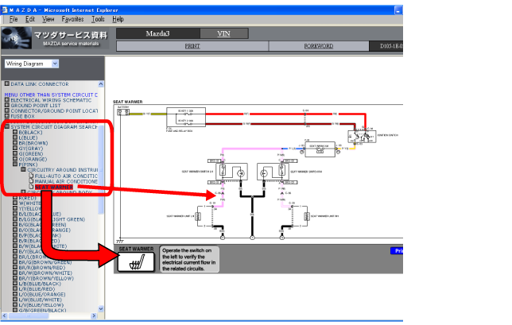
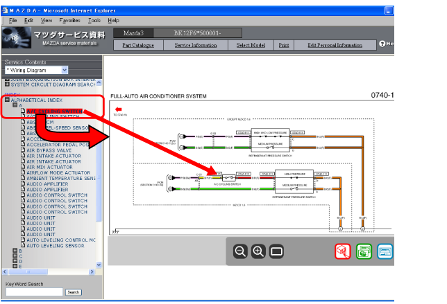

ฟังก์ชั่นค้นหาผังวงจรไฟฟ้าที่ใช้ประโยชน์ได้
CJJ010000000U03
การค้นหาผังวงจรไฟฟ้าจากขั้วต่อ / จุดต่อลงกราวด์
1. เลือกแผนผังตำแหน่งจากเมนู
2. คลิกขั้วต่อที่ต้องการหรือจุดต่อลงกราวด์เพื่อแสดงผังวงจรไฟฟ้านั้นๆ

การค้นหาผังวงจรไฟฟ้าจากฟิวส์
1. เลือกกล่องฟิวส์จากเมนู
2. คลิกฟิวส์ที่ต้องการเพื่อแสดงผังวงจรไฟฟ้านั้นๆ

การค้นหาผังวงจรไฟฟ้าจากสีสายไฟ
เลือกสีสายไฟจากเมนูเพื่อแสดงผังวงจรไฟฟ้าของชุดสายไฟนั้นๆ

การค้นหาผังวงจรไฟฟ้าจากชื่อชิ้นส่วน
เลือกชื่อชิ้นส่วนจากเมนูเพื่อแสดงผังวงจรไฟฟ้าของชุดสายไฟนั้นๆ
